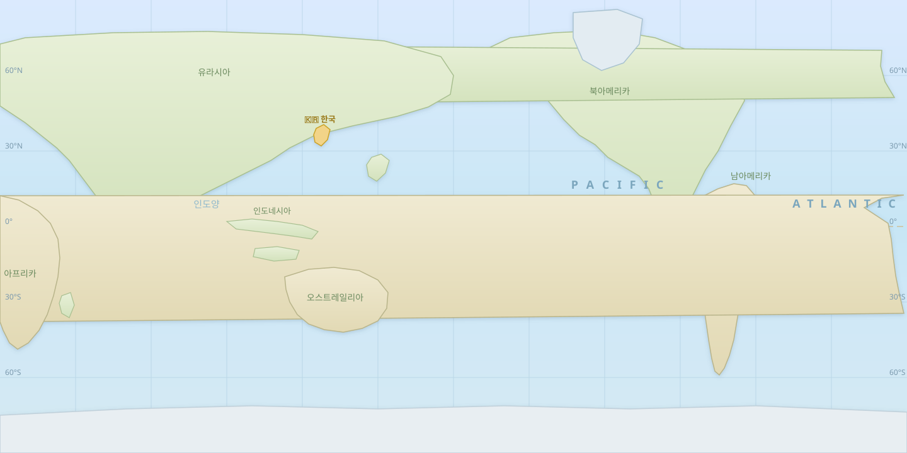

🗺 실제 세계지도 — 태평양 중심

🧭 남방진동이 발생하면 한반도의 날씨는 어떻게 될까?
실제 세계지도 위에서 시작 지점을 고르고, 지역을 관측하며
대기 순환이 한반도로 이어지는 길을 예측하세요.
👇 시작 지점을 선택하세요
✕
클릭해 지역 관측기압 상승기압 하강한국
📜 예측 기록 (나의 탐구 로그)
📋관측 데이터
게임 시작 시 결정됩니다
🏹 대기 순환 방향 예측
0 / 500자 · 근거 없이는 제출할 수 없습니다
💬 결과 설명에 대해 더 물어보기